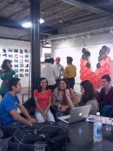

Click to see the Codesign Studio Class Syllabus: Week 7: Appropriation, Innovation, Bricolage, Design?
This week, we met at Urbano Project (http://www.urbanoproject.org/) in Jamaica Plain. Urbano occupies a large space separated into 2 parts, and when we arrive, there is a group of students working in the back classroom area and our class gathers in the front gallery space. Stella, the Executive Director of the Urbano Project introduces the organization and Urbano staff describe the work displayedi n the gallery.
Risa spoke about the Narratives of Exclusion. This is a series visualizing data around issues of equity and transportation. At the time, there was public conversation about the 28 bus route that runs between Ruggles and Mattapan and research that revealed that communities of color spend 66% more time waiting for transit than other groups. (See this article for more info about race-based transit inequity in Boston: http://www.bostonglobe.com/metro/massachusetts/2012/11/25/wide-racial-gap-exists-speed-boston-area-commutes/utDAVcJ9B6QUALUidI9DGL/story.html).
Working in pairs, groups chose statistics that resonated with them and selected materials, mostly repurposed found objects, to represent the data. Risa talks about the projects as wearable data visualizations. On display were a head piece, a shirt for 2, bracelet-like arm decorations, and a cape.
One piece, a shirt made from 2 shirts with silver, blue and yellow whistles attached, is a representation of the types of crime that are reported as occuring on MBTA trains. Based on a pie chart from an annual MBTA crime report, the group created this wearable data visualization with silver whistles representing the most commonly reported crimes, non-payment of fare. The blue whistles are related to stealing; the yellow whistles are a larger miscellaneous category – which includes violent crimes like rape.

While working on this project, the group reached out to the MBTA and met with them. They had a series of discussions with the planning department of the MBTA to understand how these issues were being addressed and their future plans. MBTA employees came to their exhibition and publicly acknowledged their work.
The youth went to Wake up the Earth (a celebration of the South-West corrdor) – a site of successful community organizing where the city had planned to build a freeway through what is now the south-west corridor. Through neighborhood organizing, plans were changed and community resources were built including parks. It was an important moment for the group. They realized the impact of their project in the real world – imagine 600 whistles banging together and shining in the sun.
Check out Urbano’s Project Page and these video links to learn more about Urbano’s work:
Workshop:: Video Interviews
The Urbano students joined us and we broke into small groups of about 6. The Urbano students guided us in interviewing one another using questions they had prepared. We filmed one another using our mobile phones and shared the videos with the Urbano Project.

In our group, we choose a few questions from the list:
- What’s an interesting setting for a dream?
- What is a common theme for your dreams?
- If you could invent anything, without any rules or limitations, what would it be?
- What’s an important social justice issue for you; what would the world look like if that were not a problem?
Assemblage and Bricolage
After interviewing each other, we gathered in the classroom area and Eve Ewing, Program and Communication Manager at Urbano led us through a lesson on Assemblage and Bricolage including a hands-on activity to introduce us to the artistic process that Urbano uses.
Eve introduces appropriation as creative re-negotiation and bricolage as tinkering, learning by doing. In the visual arts, appropriation is adopting or recontextualizing existing objects, texts, or images as art without significantly modifying them. Bricolage is creating work with whatever you happen to have on hand, especially everyday objects and unwanted items. Assemblage is a kind of art where you are combining objects. Eve shows examples of appropriation and bricolage.
Some examples of appropriation:


– Duchamp, Fountain (1917), left — when you take a urinal and recontextualize it, it becomes something else
– Sherrie Levine’s “Fountain” (1991), right — a urinal cast in gold;

– Sherrie Levine “After Walker Evans: 4” (1981) – took a catalog of Walker Evans’ images and photographed his images from a catalog; the estate of Walker Evans purchased all of the pieces in this series. (http://www.afterwalkerevans.com/)
Some example of bricolage – making these from whatever is handy

– Mark Bradford, “Strawberry” (2002). He’s from LA and his mom runs a beauty salon – he collected the neon posters he found around him and turned it into this piece. It’s a comment on the area he lived in; ‘strawberry’ is a slang term for a crack addict.
Urbano uses appropriation and bricolage – create working that involved boundary crossing and risk-taking. These techniques are about crossing the boundaries. We look to blur the distinction between what is art and what is an artist and what is art and what is every day life. Peace Line (2013) is an appropriated piece we made this summer.<
Hands-On with Urbano’s Artistic Process:
We’re doing an activity inspired by Erwin Wurm’s “One Minute Sculptures” in which he placed a person in a position with a set of object for 60 seconds.


– Two example of Erwin Wurm’s 1-min Sculptures. Images originally located at: http://publicdelivery.org/
We’re using 2 materials. One is the object you always have — your body; and the other type is objects we find in the studio. We see examples appropriating other people’s bodies and using them in bricolage.
Instructions:
– Find a partner. Decide who is going to be the sculptor and who will be the sculpture.
– Use items in the gallery to create a sculpture; try to defamiliarize yourself with the body and the object. Look anew at both.
– Create one iteration, step back, and adjust. Continue tinkering until you’re satisfied.
It was a great class. Thanks to Urbano for hosting us and leading the lessons for the day. We’ll be using the Ladder of Feedback method in the future!


{kind=link}
{kind=link}
{kind=link}